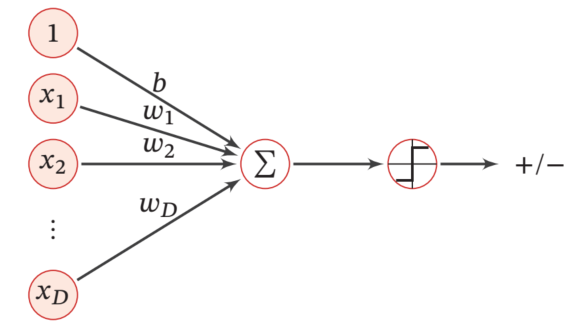
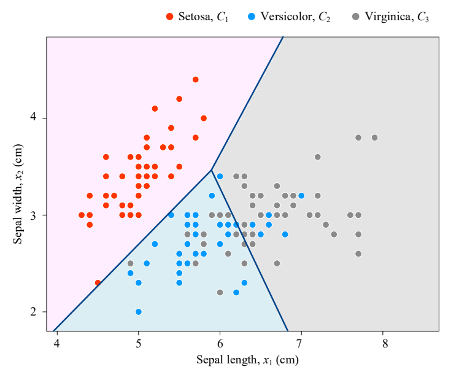

线性分类
在监督学习的范畴中，分类 (Classification) 是最核心和最常见的一类任务。这里将从分类问题的基本概念出发，详细介绍最基础的线性分类模型。
信用卡例子
在信用卡审批的例子中，假设我们将每个申请人的信息（例如，薪水和工龄）作为两个特征，绘制在一个二维平面上。历史上被批准的申请人，我们用蓝色“+”号表示；被拒绝的，用红色“-”号表示。
在这个场景下，每一个数据点(xi,yi)就构成了一个训练样本，其中： - xi是第i个申请人的特征向量（例如，xi=[薪水i,工龄i]⊤）。
- yi是对应的标签，在这个例子中yi∈{+1,−1}，其中+1代表“批准”，−1代表“拒绝”。
给定一组训练数据样本(x1,y1)…,(xn,yn)，我们的目标是学习一个模型（或函数）fθ，它能够将特征空间中的任意一点映射到一个离散的标签。具体到这个二元分类 (binary classification) 问题，模型的映射关系为： fθ:Rd→{−1,+1} 这里的d是特征的数量（在我们的例子中d=2）。这个学习到的模型fθ是对那个未知的、理想的决策规律g的一个近似。 那么，我们应该选择什么样形式的模型fθ呢？最直观、最简单的想法就是在特征空间中画一条直线，将两个类别的点分开。
这条红色的直线就是一个决策边界 (Decision Boundary)。所有落在直线上方的点，我们预测为“+1”；所有落在下方的点，我们预测为“-1”。这种试图用一个线性方程来划分数据类别的模型，就是线性分类模型 (Linear Classification Model) 。
下图展示了当特征向量xi的维度d=2和d=3时，线性分类模型的决策边界。 线性分类模型
数学定义
在二维空间中，一条直线可以用方程θ1x1+θ2x2+b=0来表示。推广到d维的特征空间，这个线性边界被称为超平面 (Hyperplane)。一个点x到这个超平面的“距离”和“方向”可以用一个线性函数来表示。因此，线性分类模型fθ采用以下线性形式： fθ(x)=θ⊤x+b=θ1x1+⋯+θdxd+b - x∈Rd 的特征向量。
- θ∈Rd是模型的权重向量 (weight vector)。它决定了决策边界的方向（即超平面的法向量）。
- b∈R是偏置项 (bias term)。它决定了决策边界的位置（即超平面到原点的距离）。
因此，线性分类的假设空间 (Hypothesis Space)H 就是所有这类线性函数的集合： H:={fθ(x)=θ⊤x+b∣θ∈Rd,b∈R} 我们的学习任务，就是从这个无限的函数集合中，找到最优的那个θ和b。 吸收偏置项
在处理线性模型时，θ⊤x+b这个形式虽然直观，但在进行数学推导和算法实现时，带有一个独立的偏置项b会稍显繁琐。我们可以通过一个非常巧妙的技巧将其简化。 这个技巧的核心是将偏置项b吸收进权重向量θ中。 - 增广特征向量 (Augment the feature vector): 我们给原始的d维特征向量x增加一个维度，这个维度的值恒为1。新的向量记为x~，它是一个d+1维的向量：
x=⎣⎡x1⋮xd⎦⎤∈Rd⇒x~=⎣⎡1x1⋮xd⎦⎤∈Rd+1 - 增广权重向量 (Augment the weight vector)：我们同样将偏置项b作为第一个元素，与原始的权重向量θ合并。新的向量记为θ~,它也是一个d+1维的向量：
θ=⎣⎡θ1⋮θd⎦⎤,b⇒θ~=⎣⎡bθ1⋮θd⎦⎤∈Rd+1
θ~⊤x~=[b,θ1,…,θd]⎣⎡1x1⋮xd⎦⎤=b⋅1+θ1x1+⋯+θdxd=θ⊤x+b 可以看到，通过增广向量，原来的线性函数θ⊤x+b被完美地转换成了一个更简洁的内积形式θ~⊤x~。 通过吸收偏置项，我们的线性模型及其预测规则可以被更紧凑地表示为：
fθ(x)=θ⊤x+b\ce−>[吸收偏置][]fθ(x)=θ~⊤x~\ce−>[简化表示][]fθ(x)=θ⊤x 简化表示：在后续的讨论和文献中，为了书写方便，通常会省略波浪号~，直接使用θ和x来代表已经增广过的向量。 感知器 (The Perceptron)
感知机是历史上第一个被提出的机器学习算法之一，由 Frank Rosenblatt 于1957年提出。它不仅是神经网络的雏形，也是理解更复杂分类算法的基石。
模型定义
模型的输出fθ(x)是一个连续的实数值，它代表了点x距离决策边界的远近和方向。但它并不是我们最终需要的离散分类标签+1或+1。如何转换？ 为了完成从连续得分到离散类别的转换，我们需要在模型中引入一个非线性组件，这个组件在神经网络的语境下被称为激活函数 (Activation Function) 。
感知机所使用的激活函数是符号函数 (Sign Function)，它是一种形式非常简洁的阶跃函数 (Step Function)。它的作用是：当输入大于某个阈值时，输出一个值；当输入小于阈值时，输出另一个值。
我们设置阈值为0，即通过判断fθ(xi)的正负号来进行决策： - 如果fθ(xi)＞0，说明该点在决策边界的正侧，我们预测其类别为+1。
- 如果fθ(xi)<0，说明该点在决策边界的负侧，我们预测其类别为−1。
- 如果fθ(xi)=0，说明该点恰好在决策边界上。
（注：数学上，阶跃函数的值一般是0或1，这里使用−1和+1）
结合线性和激活两个部分，一个完整的感知机模型可以被定义为：
fθ(x)=sign(θ⊤x)={+1,−1,if θ⊤x>0if θ⊤x≤0 （注：这里为了简化，将θ⊤x=0的情况归入−1类别） 至此，我们已经完整构建了感知机模型。它接收一个输入x，并能够输出一个预测的分类标签。 
学习算法
在定义了模型之后，我们需要设计一个算法，根据训练数据来找到最优的分类器，即找到那组最优的权重参数θ。 为了理解算法背后的直觉，我们需要先明确权重向量θ的几何意义： 在几何上，方程θ⊤x=0定义了一个超平面（即决策边界）。而权重向量θ正是这个超平面的法向量 (Normal Vector)。以二维分类模型为例，方程θ⊤x=0是一条直线（θ1x1+θ2x2+b=0），向量θ的方向必然垂直于这条直线。因此，我们改变θ，本质上是对这条直线的进行旋转。 几何规律：一个完美的分类器是怎样的？假设下图呈现的是一个完美的分类器，我们可以发现一个几何规律，对于正类样本，与θ的夹角是锐角；对于负类样本，则与θ的夹角是钝角。
基于这个几何规律，我们希望通过不断调整θ的方向，使其满足以下几何关系： - 对于所有正类样本(yi=+1)，我们要让θ与xi的夹角变为锐角（即方向大致相同），从而保证θ⊤xi>0。
- 对于所有负类样本(yi=−1)，我们要让θ与xi的夹角变为钝角（即方向大致相反），从而保证θ⊤xi<0。
基于这样的直觉，我们只需要把样本一个个地拿出来，看一下当前样本xi与当前θ的夹角： - 针对被错误分类的样本：如果xi是正类样本，夹角却是钝角，或者xi是负类样本，夹角却是锐角，就说明模型在这个样本上犯错了，我们需要旋转θ来修正这个错误。
- 如何旋转：①当xi是正类样本，与θ的夹角却是钝角，我们就让θnew=θ+xi，这会把θ的方向推往xi的方向；②当xi是负类样本，与θ的夹角却是锐角，我们就让θnew=θ−xi，这会把θ的方向推往xi的反方向。
可以说，感知机是一种错误驱动 (error-driven) 的在线学习算法：
- 模型只有在犯错的时候才会进行调整和学习。
- 如果一个样本已经被正确分类，模型则不进行任何改变。
上述流程似乎很复杂，需要我们不断地判断是“正”还是“负”，但感知机的算法流程非常简洁。
- 初始化：随机初始化权重向量θ(例如，初始化为全零向量)。
- 送代：循环遍历整个训练数据集。在每一次迭代中，当一个样本的预测结果与真实标签不符时，即sign(θ⊤xi)=yi。这个条件等价于yi(θ⊤xi)≤0。
- 更新：选取这个被错误分类的样本(xi,yi)，则使用以下规则更新权重向量：
θ:=θ+yixi - 终止: 重复步骤2和3，直到在数据集上找不到任何被错误分类的样本为止。此时，算法收敛（只有线性可分时），我们得到了最终的权重向量θ。
这个更新规则θ:=θ+yixi看似简单，但背后有非常清晰的几何意义： - 情况一：一个正样本(yi=+1)被错误分类
- 此时θ⊤xi≤0，意味着向量θ和xi的夹角过大（≥90∘）。
- 更新操作：θnew=θold+1⋅xi。
- 新的权重向量θnew是旧向量θold与该样本向量xi的矢量和。这个操作会将θ向xi的方向“拉近”一些，从而减小了它们之间的夹角。这使得下一次遇到类似的样本时，θnew⊤xi 的值会比原来更大，更有可能变为正数，从而实现正确分类。
- 情况二：一个负样本(yi=−1)被错误分类
- 此时θ⊤xi＞0，意味着向量θ和xi的夹角过小（<90∘）。
- 更新操作：θnew=θold+(−1)⋅xi。
- 这个操作会将θ向远离xi的方向“推开”一些，从而增大了它们之间的夹角。这使得下一次遇到类似的样本时，θnew⊤xi的值会比原来更小，更有可能变为负数，从而实现正确分类。
下图展示了感知器参数学习的更新过程，中心为坐标系原点，其中红色实心点为正例，蓝色空心点为负例。黑色箭头表示当前的权重向量，红色虚线箭头表示被错误分类的向量，也代表了权重的更新方向（或相反方向）。
算法特性
理解了算法流程后，我们还需要深入探讨它的一些关键特性和局限性。
- 收敛性 (Convergence)
如果训练数据集是线性可分 (linearly separable)的（即，确实存在一个超平面能将数据完美分开），那么感知机算法保证能在有限次的迭代后收敛，并找到这样一个超平面。
- 最优性 (Optimality)
感知机找到的解并非最优。对于一个线性可分的数据集，可能存在无数个满足条件的超平面。感知机只会满足于找到任意一个可以成功划分数据的解，然后就停止了。它不会去寻找那个“最好”的、最“鲁棒”的决策边界（例如，距离两个类别的最近点都有最大间隔的那个）。这个问题将由后续的支持向量机 (SVM) 来解决。
- 线性不可分问题 (The Non-Linearly Separable Case)
这是感知机算法的一个致命弱点。如果数据集本身就不是线性可分的，那么算法将永远无法找到一个能将所有点都正确分类的解，因此算法将永不收敛，会一直在数据点之间来回振荡。在实际应用中，需要使用其他算法（如带有“口袋”机制的感知机）或更复杂的非线性模型来处理这类问题。
下图展示了三组xi的维度d=2的数据的分布情况，只有第一种能很好地被线性分类。
- 泛化能力 (Generalization)
假设感知机成功地在训练集上找到了一个完美的分割线，这是否意味着它在未来的、未知的测试数据上也会表现良好？答案是不一定。模型在训练数据上的表现好，不等于它的泛化能力强。这引出了机器学习中一个核心的议题：过拟合 (Overfitting) 与泛化。
逻辑回归
条件概率与分类
我们的任务是建立一个分类器，例如信用卡审批申请，结果只有两种：“批准 (Approve)” 或 “拒绝 (Reject)”。在机器学习中，我们将这些文字标签转换为数字。这里，“批准”对应y=+1，“拒绝”对应y=−1。 现在有一个新的申请数据x（x可以包含申请人的各种信息，如收入、信用记录等），但它没有标签。我们需要判断应该将它分为 “批准” 还是 “拒绝”。 假设我们通过某种方式“神奇地”知道了以下两个概率：
- Pr[y=+1∣x]=0.8：给定数据x的条件下，这个申请被“批准”的概率是80%。
- Pr[y=−1∣x]=0.2：给定数据x的条件下，这个申请被“拒绝”的概率是20%。
那么答案显而易见，既然“批准”的概率（80%）远大于“拒绝”的概率（20%），最合理的选择就是将x归类为“批准” (y=+1)。 最优分类器
把上述的决策过程用数学的方式写下来。一个理论上“最好”的分类器，被称为贝叶斯最优分类器 (Bayes-optimal classifier) ，它的决策规则如下：
y←y∈YargmaxPr[y∣x] 这个公式的意思是，对于给定的数据x，计算出它属于每一个可能类别y (在我们的例子中，Y={+1,−1}) 的条件概率Pr[y∣x]，然后选择那个使概率最大的类别作为最终的预测结果。 后验概率 (A-posteriori probability)：Pr[y∣x]这个概率有一个专门的名称，叫做后验概率。它代表在观测到数据x之后，判断其类别为y的概率。 但在现实世界中，我们无法直接知道真正的条件概率Pr[y∣x]是多少。我们不能像上面那样“神奇地”得到 0.8 和 0.2 这两个数字。 那么该如何得到Pr[y∣x]呢？答案是从数据中学习。 我们拥有一批已经标记好的训练数据 {(x1,y1),(x2,y2),…,(xn,yn)}。我们的任务就是利用这些数据，构建一个模型（或者叫估计器），用它来近似真实的Pr[y∣x]。我们将这个模型记为Prθ[y∣x]，其中θ代表了我们需要从数据中学习的模型参数。 Sigmoid 函数
我们应该选择什么样的函数来作为我们的模型Prθ[y∣x]？ 这里有一个非常重要的函数——逻辑函数，也叫Sigmoid 函数。它的数学表达式为：
h(t)=et+1et=1+e−t1 从图像上看，它是一条平滑的“S”形曲线。并且，无论输入t是什么（从负无穷到正无穷），函数的输出值h(t)永远在0和1之间。
概率的取值范围恰好也是[0,1]。因此，我们可以利用 Sigmoid 函数的这个优良特性，让它来扮演我们想要估计的条件概率Pr[y∣x] - 先用一个线性函数来处理输入数据x。通常我们计算t=w⊤x+b，这里的w和b就是我们要学习的模型参数θ。这个线性函数的结果t可以是任意实数。
- 然后，将这个结果t输入到 Sigmoid 函数中，得到一个[0,1]之间的输出值。
- 我们将这个输出值解释为“类别为+1”的概率。
这就是逻辑回归模型 (Logistic Regression Model) 的思想。
逻辑回归模型
逻辑回归使用参数θ和输入x来为二分类问题（类别为+1和-1）建模条件概率Pr[y∣x]。 正类概率：Prθ[y=+1∣x]=h(θ⊤x)=1+e−θ⊤x1负类概率：Prθ[y=−1∣x]=1−h(θ⊤x)=1+eθ⊤x1 这里，h(⋅)就是我们之前学过的 Sigmoid 函数。θ⊤x是一个线性组合，结果是一个标量。因为总概率为1，负类概率=1-正类概率。 模型表示
这两个公式可以通过一个非常巧妙的数学技巧合并成一个表达式：
θPr[y∣x]=1+exp(−y⋅θ⊤x)1 - 当y=+1时，公式变为1+exp(−θ⊤x)1，与正类概率公式一致。
- 当y=−1时，公式变为1+exp(−(−1)⋅θ⊤x)1=1+exp(θ⊤x)1，与负类概率公式一致。
虽然逻辑回归的名字里有“回归”，并且它通过一个非线性的 Sigmoid 函数来建模概率，但它的决策边界本质上是线性的。
回到最开始的逻辑函数（Sigmoid 函数）。它的数学表达式为：
h(t)=1+e−t1⎩⎨⎧h(t)<0.5h(t)=0.5h(t)>0.5t<0t=0t>0
那么对于正类概率Prθ[y=+1∣x]=h(θ⊤x)＞0.5，等价于θ⊤x＞0。同理，如果θ⊤x＜0，那么y=+1的概率就小于0.5，我们将其分类为y=−1。 因此，分隔正负样本的边界就是θ⊤x=0。在二维空间中，这是一个直线；在三维空间中，这是一个平面；在更高维的空间中，它被称为超平面 (Hyperplane)。因为它的决策边界是一个超平面，所以我们说逻辑回归是一个线性分类器。 最大似然估计
我们已经知道了模型的形式，那么可以使用最大似然估计 (Maximum Likelihood Estimation, MLE) 学习到这个θ。 似然 (Likelihood)：对于单个训练样本(xi,yi)，在给定参数θ的情况下，模型预测其发生的概率是： θPr[yi∣xi]=1+exp(−yi⋅θ⊤xi)1 这个概率值，从另一个角度看，就是数据(xi,yi)在参数θ下的似然函数的值。它衡量了我们的模型参数与真实数据的匹配程度。 由于我们要寻找一组参数θ，使得整个训练数据集的总似然最大化。 假设所有训练样本是独立同分布的，那么整个数据集的似然就是每个样本似然的乘积：
L(θ)=i=1∏nθPr[yi∣xi]=i=1∏n1+exp(−yi⋅θ⊤xi)1 我们的任务就是找到能使L(θ)取最大值的那个θ∗。在实践中，为了计算方便（将乘法变为加法，防止浮点数下溢），我们通常是最大化对数似然（Log-Likelihood）。 L(θ)=log(L(θ))=i=1∑nlog(θPr[yi∣xi])=i=1∑n−log(1+exp(−yi⋅θ⊤xi)) θmini=1∑nlog(1+exp(−yi⋅θ⊤xi)) 为了使目标函数不受样本数量n的影响，我们通常会优化它的平均值，也就是除以n。这并不会改变最优解θ的取值。 θ^=θ∈Rdargminn1i=1∑nlog(1+exp(−yi⋅θ⊤xi)) 这个最终的优化目标现在有了一个非常清晰的结构。里面的求和项被称为损失函数 (loss function)。它衡量了模型在单个样本(xi,yi)上的预测表现有多差。这个特定的损失函数被称为逻辑损失 (logistic loss)或交叉熵损失 (cross-entropy loss)。 ℓ(fθ(xi),yi)=log(1+exp(−yi⋅θ⊤xi)) 整个目标函数n1∑ℓ(⋅)就是模型在所有训练数据上的平均损失，我们称之为训练误差或样本内误差 (In-sample Error, Erin)。 从二分类到多分类
逻辑回归是解决二元分类问题的经典模型。例如，判断一封邮件是否是垃圾邮件（是/否）。它通过Sigmoid函数将模型的线性输出映射到(0,1)区间，这个值可以被解释为属于其中一个类别的概率。 然而，在现实世界中，我们经常遇到需要将事物分到两个以上类别的情况，即多分类问题。例如：
- 手写数字识别：将一张图片识别为 0, 1, 2, ..., 9 中的某一个数字。
- 新闻文章分类：将一篇文章归类为体育、财经、科技、娱乐等类别。
- 图像内容识别：判断一张图片里的动物是猫、狗，
当分类任务的类别K>2时，逻辑回归就无法直接应用了。Softmax 回归（Softmax Regression），有时也被称为多项逻辑回归（Multinomial Logistic Regression），正是为了解决这类问题而设计的。 Mathematical Engineering of Deep Learning
Softmax函数
解决多元分类问题的核心思想非常直观：既然一个模型只能做二元判断，那我们就为每个类别都建立一个专属的“评判标准”。如果总共有K个类别，我们就会有K套独立的权重向量，我们将其表示为θ1,θ2,…,θK。每一个权重向量θk都对应着第k个类别。 对于一个给定的输入样本xi，模型会执行以下操作： - 为每个类别计算一个“分数”（Score）：模型使用每个类别的权重向量θk与输入样本xi进行线性运算（点积），为该类别生成一个分数。这个分数可以被理解为模型认为样本xi属于类别k的“证据”或“倾向性”有多强。
score(xi,k)=θk⊤xi - 将分数转换为概率：得到所有K个类别的分数后，我们需要一种方法将这些任意大小的分数（可以是正数、负数或零）转换成一个有效的概率分布。这个概率分布必须满足两个条件：
- 每个类别的概率值都在 0 和 1 之间。
- 所有类别的概率值加起来总和为 1。
完成这个转换任务的函数，就是Softmax 函数。
Softmax 函数是整个模型的核心。假设我们有一个包含K个分数的向量s=[s1,s2,…,sK]⊤，其中sk是第k个类别的分数。Softmax 函数会对这个向量进行如下操作，计算出第k个类别的概率： Softmax(s)k=∑j=1Kesjesk - 指数化：它使用指数函数esk将所有的分数都映射到正数域，确保概率值为正。
- 归一化：它将指数化后的分数除以所有类别指数化分数之和（∑j=1Kesj）。这保证了所有计算出的概率值加起来正好等于 1。
这完美地符合概率分布的定义。Softmax 是 Sigmoid 在多分类场景下的自然推广。此外，Softmax 这个名字的含义是“平滑化的最大值（soft arg max）”。它输出的概率分布会倾向于给分数最高的那个类别一个远大于其他类别的概率值。
多分类逻辑回归
现在，我们将 Softmax 函数与前面提到的线性分数计算结合起来，就得到了最终的概率模型。
我们用Θ (大写的 Theta) 来表示所有类别权重向量的集合，即Θ=[θ1,θ2,…,θK]。对于一个给
定的输入样本xi，模型预测其属于类别k的后验概率 (a-posteriori) 可以表示为： pi,k=ΘPr[yi=k∣xi]=∑j=1Kexp(θj⊤xi)exp(θk⊤xi) 这里的θk⊤xi就是我们前面提到的类别k的分数sk。这个公式精确地描述了，给定输入xi和模型
参数Θ，样本yi属于类别k的概率是多少。 通过为每个类别k=1,…,K计算这个概率，我们就得到了一个包含K个概率值的向量，这个向量代表了模型认为当前输入xi属于各个类别的概率。 和二分类一样，我们同样使用最大似然估计 (MLE) 的原理来推导多分类逻辑回归的学习目标。
我们的目标是找到一组最优的参数Θ^，使得模型对整个训练数据集{(xi,yi)}i=1n发生的“可能性”最大。 具体来说，对于每一个样本，模型会分别给出属于K个类别的预测概率，其中有一个属于数据集中标注的真实类别yi。我们需要的是真实类别的预测概率，而不需要其他类别的预测概率，因此，这里使用了一种特殊的函数“挑出”模型对其真实标签的预测概率。 指示函数 (Indicator function) 1{yi=k}：这是一个开关。如果样本i的真实标签yi确实是类别k，它的值为1，否则为0。 那么，对于样本i，模型对其真实标签的预测概率可以写作： P(yi∣xi;Θ)=k=1∏K(pi,k)1{yi=k} 我们来验证一下这个式子。假设有3个类别 (K=3)，而样本i的真实标签是yi=2。那么1{yi=1}=0，1{yi=2}=1，1{yi=3}=0，代入上式，得到： P(yi=2∣xi;Θ)=(pi,1)0⋅(pi,2)1⋅(pi,3)0=1⋅pi,2⋅1=pi,2 这正是我们想要的——模型预测样本i属于其真实类别 2 的概率。这个表达式完美地为我们挑选出了对应真实类别的那一项概率。 似然函数是指在参数Θ下，观测到整个数据集所有标签的联合概率。我们通常假设所有训练样本是独立同分布 (i.i.d.)的，那么，观测到整个数据集的概率等于观测到每个样本概率的乘积。 P(y1,…,yn∣x1,…,xn;Θ)=i=1∏nP(yi∣xi;Θ)=i=1∏n(k=1∏K(pi,k)1{yi=k}) 然后，我们对似然函数取对数，得到对数似然函数L(Θ)，并进一步化简： L(Θ)=log(i=1∏nk=1∏K(pi,k)1{yi=k})=i=1∑nk=1∑K1{yi=k}log(pi,k) 最后，我们将pi,k的的 Softmax 表达式代入，并且为了使目标函数的大小与数据集的规模无关，我们通常会对其求平均（除以样本总数 n）。 Θ^=Θ∈Rd×Kargmin−n1i=1∑nk=1∑K1{yi=k}log⎝⎛∑j=1Kexp(θj⊤xi)exp(θk⊤xi)⎠⎞ 至此，我们便完整地推导出了目标函数。这个损失函数被称为交叉熵损失(Cross-Entropy Loss)。
这个函数直观地解释了模型的学习目标：对于每一个样本i，模型的目标是让其真实类别yi所对应的概率pi,yi尽可能大。由于指示函数1{yi=k}的存在，对于不正确的类别，其对应的项都为零，不会对损失产生影响。 总之，逻辑回归可以通过将 Sigmoid 函数推广到 Softmax 函数，从二分类扩展到多分类。其学习过程与二分类完全一致，都是基于最大似然估计原理，最终转化为一个可由梯度下降等算法求解的、性质优良的凸优化问题。
假设我们正在做一个动物图片分类器，要区分三类动物：猫 (Cat)、狗 (Dog)和鸟 (Bird)。
- 类别标签 (k)：我们给它们编号，k=1代表猫，k=2代表狗，k=3代表鸟。
- 模型参数 (Θ)：我们的模型需要为每个类别都学习一个专属的权重向量。所以我们有三个向量：θ1 (猫的权重)，θ2 (狗的权重)，θ3 (鸟的权重)。
现在，我们从训练集中取一个样本(xi,yi)来分析。假设xi是一张狗的图片，那么它的真实标签就是yi=2。让我们看看目标函数是如何计算这张图片带来的“误差”的。 对于这张输入的图片xi，模型会用每个类别的权重向量与它做内积，得出一个“分数”。这个分数越高，代表模型初步认为图片属于该类别的可能性越大。为了让例子更具体，假设了当前参数算出的分数。 - 猫的分数：s1=θ1⊤xi=1.5
- 狗的分数：s2=θ2⊤xi=2.8
- 鸟的分数：s3=θ3⊤xi=−0.5
分数本身不好用，我们需要将它们转换成规范的、加起来等于1的概率。这就是 Softmax 函数的作用。
- P(是猫∣图片xi)=es1+es2+es3es1=e1.5+e2.8+e−0.5e1.5≈21.534.48≈0.21(21%)
- P(是狗∣图片xi)=es1+es2+es3es2=e1.5+e2.8+e−0.5e2.8≈21.5316.44≈0.76(76%)
- P(是鸟∣图片xi)=es1+es2+es3es3=e1.5+e2.8+e−0.5e−0.5≈21.530.61≈0.03 (3%)
现在我们来计算这张图片的损失 (Loss)。根据前面得到的损失函数，对于这一张图片，它的损失是：
Li=−k=1∑31{yi=k}log(模型预测类别为k的概率) 这里的关键是 指示函数 1{yi=k}。它的作用像一个选择器或开关： - 当k等于图片的真实标签yi时，它的值为 1。
- 当k不等于图片的真实标签yi时，它的值为 0。
由于我们的图片是狗 (yi=2)，我们来展开这个求和公式： Li=−⎣⎡=01{2=1}log(P(是猫))+=11{2=2}log(P(是狗))+=01{2=3}log(P(是鸟))⎦⎤ 因为指示函数的作用，前一项和后一项都变成了0，整个式子瞬间简化了：
Li=−[0+1⋅log(P(是狗))+0]=−log(P(是狗))=−log(0.76)≈0.27 因此，对于一个样本，它的损失就是模型赋予其“正确类别”的概率的负对数值。
最小化这个损失，就是最小化预测为“正确类别”的概率的负对数值，等同于最大化预测为“正确类别”的概率。通过不断调整参数θ1,θ2,θ3，使得模型为这张狗的图片预测“是狗”的概率尽可能地接近 100%。 如果模型对这个样本预测得很差，比如P(是狗)=0.01，那么损失就会很大，Li=−log(0.01)≈4.6。优化算法（如梯度下降）会根据这个巨大的损失，调整参数从而提高将这个样本预测为狗的概率，减小损失。 前面推导出来的最终目标函数，只是把我们上面为单个样本计算损失的过程，推广到了所有n个训练样本上，并取了一个平均值： Θ^=Θargminn1i=1∑nLi(Θ) 它要做的事情就是，找到一组“最优”的权重Θ^，这组权重能够使整个训练集中的每个样本被赋予其正确类别的概率都是最高的。 逻辑回归总结
核心概念: 逻辑回归（LR）最关键的思想就是使用逻辑函数 (logistic function / sigmoid) 来近似后验概率Pr[y∣x]。对于二分类问题，这个模型可以被简洁地写为： Pr[y∣x]←θPr[y∣x]=1+exp(−y⋅θ⊤x)1 LR 直接使用带标签的训练数据{(xi,yi)}来学习出这个概率模型的参数θ。 当类别数大于2时，我们将 Sigmoid 函数推广为 Softmax 函数。Softmax 为每个类别都学习一个权重向量，并能保证所有类别的预测概率之和为1，完美地满足了多分类的概率建模需求。
对于更复杂的模型如深度神经网络 (deep neural networks) 和语言模型 (language models)，其根本目标之一也是学习Pr[y∣x]，但它们实现这一目标的方式更为复杂和间接。
目标函数 (Objective Function)：我们要解决的学习问题，就是最小化在训练集上的平均损失，这个损失函数（以二元逻辑回归为例）记为L(θ)： L(θ):=n1i=1∑nlog(1+exp(−yi⋅θ⊤xi)) 我们的目标是找到能使这个损失函数最小化的参数θ^： θ^=θ∈RdargminL(θ) - 坏消息 ❎：这个问题没有解析解 (No closed-form solution)。意味着我们不能像解线性回归那样，用一个简单的数学公式直接算出θ^。但是这个目标函数L(θ)是一个关于参数θ的凸函数 (convex function)。
- 好消息 ✅：一个凸函数就像一个碗，它只有一个全局最低点，没有任何局部的坑洼（局部最小值）。这意味着，我们只要顺着“碗”壁往下滑，就一定能滑到碗底的唯一最低点。因此，我们可以使用梯度下降 (gradient descent)等优化算法，来逐步逼近并最终找到这个全局最优解θ^，而不必担心被困在某个非最优的局部解中。
因此，逻辑回归的学习问题是一个没有解析解、但性质优良（凸函数）的优化问题，因此可以用梯度下降等算法来有效求解。


💬 评论区